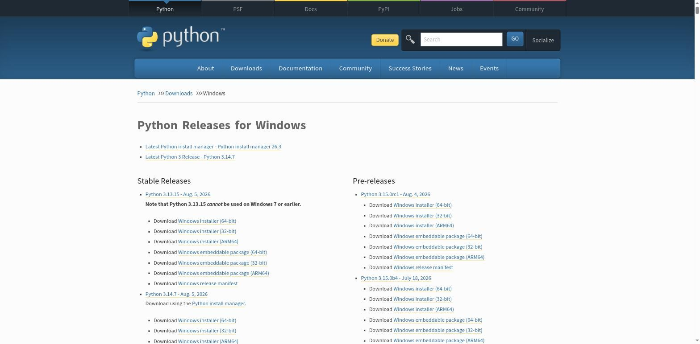

Установка Python на Windows
Четыре шага: скачать с python.org, поставить галочку PATH, установить, проверить.
На Windows есть два официальных пути поставить Python: классический установщик
.exe, который существует уже много лет, и новый
Python install manager — облегчённый инструмент для управления несколькими
версиями Python, который Python Software Foundation продвигает как основной способ установки
на Windows начиная с недавних релизов. Traditional-установщик остаётся доступным на
протяжении веток 3.14 и 3.15, так что оба варианта — не ошибка, а два официальных
пути.
.exe — он нагляднее для первого знакомства и даёт точь-в-точь тот же результат: работающую команду python в терминале.Шаг 1. Скачайте установщик
Откройте python.org/downloads — единственный источник, которому стоит доверять при загрузке Python. Сайт сам определяет вашу операционную систему и предлагает актуальную стабильную версию.

Шаг 2. Запустите установщик
Запустите скачанный файл. На первом экране установщика — самая важная галочка во всей установке:
python в терминале работать не будет — а причина будет совершенно не очевидна, если вы ещё не знаете, что такое PATH (мы разбирали это в разделе 2.2).Затем нажмите Install Now для стандартной установки — она подходит для подавляющего большинства случаев и устанавливает Python, pip и стандартную библиотеку в папку профиля пользователя.
Шаг 3. Проверьте установку
Откройте PowerShell (или обычную командную строку) и введите:
python --versionВы должны увидеть что-то вроде Python 3.14.7. Если вместо
этого терминал отвечает, что команда не распознана — скорее всего, вы пропустили галочку
«Add python.exe to PATH». Решение — запустить установщик заново и выбрать
Modify, снова отметив эту опцию, либо переустановить с нуля.
py — это отдельный «лаунчер Python», который штатно ставится вместе с интерпретатором и умеет запускать нужную версию, даже если их установлено несколько (например, py -3.14). Для этого курса используйте python — но не пугайтесь, если увидите py в чужих инструкциях.Про Microsoft Store
В Microsoft Store тоже есть Python — это официальный пакет, но у него есть особенности работы с правами доступа к файлам, которые иногда удивляют новичков. Для этого курса рекомендуем установщик с python.org — он предсказуемее и ближе к тому, с чем вы столкнётесь на реальных проектах и других операционных системах.